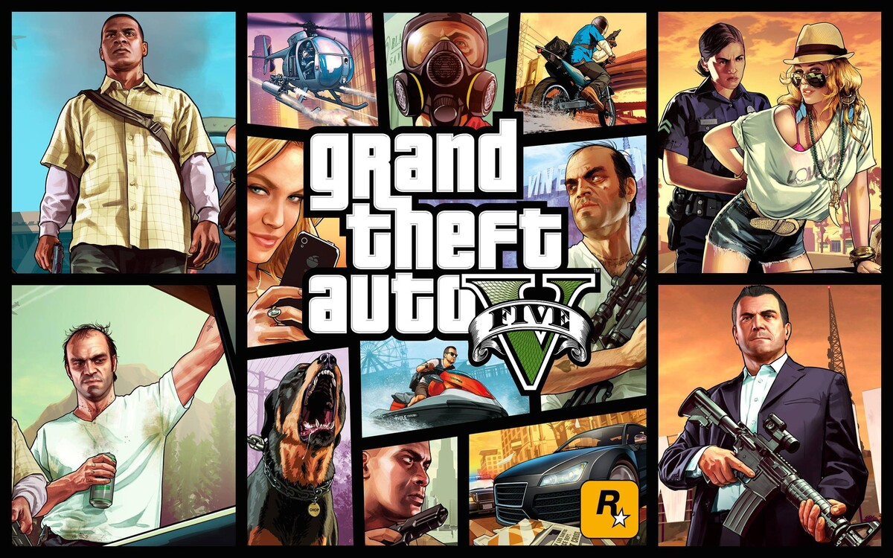
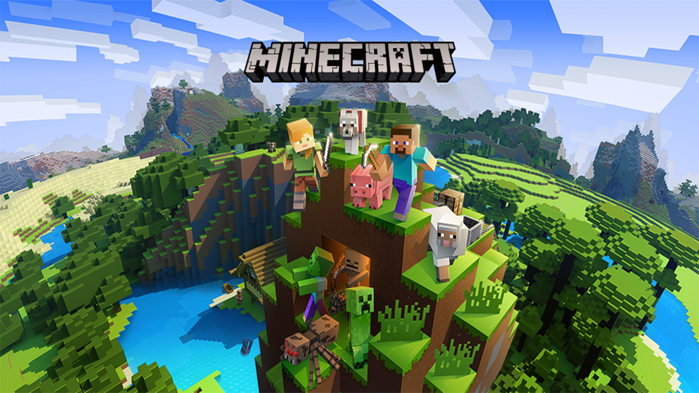
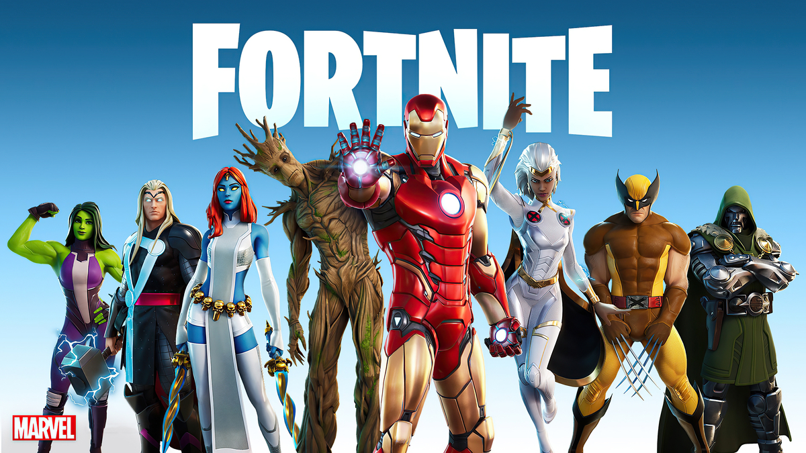
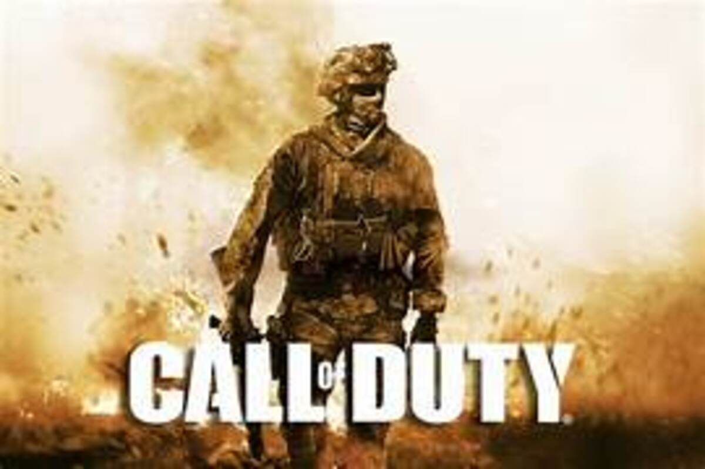
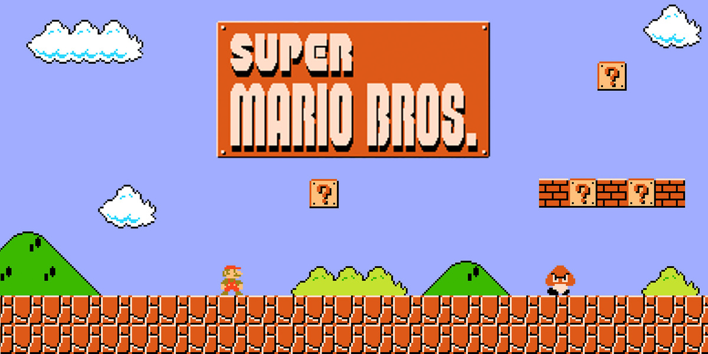

Juegos Populares
#1 GTA V
Es un juego de mundo abierto que abarga una gran cantidad de aventuras
Grand Theft Auto V (GTA V) es un videojuego de acción y aventura desarrollado por Rockstar North y publicado por Rockstar Games. Lanzado en 2013 para PlayStation 3 y Xbox 360, y posteriormente para PlayStation 4, Xbox One y PC, el juego es la quinta entrega principal de la serie Grand Theft Auto. Descripción del juego: Ambientación: El juego se desarrolla en la ficticia ciudad de Los Santos, una recreación de Los Ángeles, y sus alrededores. El mundo abierto de Los Santos es detallado y expansivo, con una variedad de entornos que incluyen playas, montañas, zonas urbanas y áreas rurales. Trama: La historia sigue a tres protagonistas principales: Michael De Santa, un ex delincuente que vive en el lujo pero busca emoción; Franklin Clinton, un joven que quiere dejar atrás su vida de pandillero; y Trevor Philips, un sociópata y antiguo compañero de Michael. La narrativa entrelaza sus vidas mientras llevan a cabo una serie de robos y enfrentamientos con el crimen organizado, la policía y otras facciones. Jugabilidad: El juego combina elementos de acción en tercera persona, conducción y exploración en un entorno de mundo abierto. Los jugadores pueden alternar entre los tres protagonistas en la historia, cada uno con habilidades y misiones únicas. Además de las misiones principales, hay una gran cantidad de actividades secundarias, como carreras, deportes, y misiones de compra y venta en el mercado negro. Multijugador: GTA V incluye el modo en línea Grand Theft Auto Online, donde los jugadores pueden competir en misiones, participar en eventos, comprar propiedades, y realizar actividades criminales en un mundo compartido con otros jugadores. Gráficos y diseño: El juego es conocido por su detallado diseño gráfico, que captura de manera impresionante la vida urbana y la naturaleza. Las animaciones, el sistema de física y el diseño del entorno son altamente realistas y contribuyen a la inmersión. GTA V ha sido aclamado por su narrativa, la profundidad de sus personajes, y su expansivo mundo abierto, convirtiéndose en uno de los títulos más vendidos y reconocidos de la industria de los videojuegos. ¿Por que GTA V es buena opcion? 
#2 MINECRAFT
Un juego de mundo abierto donde la creatividad son tus limites
Minecraft es un videojuego de construcción y aventura desarrollado por Mojang Studios, inicialmente lanzado en 2011. Es conocido por su estética de bloques y su mundo abierto donde los jugadores pueden explorar, construir y sobrevivir. Descripción del juego: Modo de juego: Minecraft ofrece varios modos de juego, cada uno proporcionando una experiencia única: Modo Supervivencia: Los jugadores deben recolectar recursos, construir estructuras, y gestionar su salud y hambre mientras enfrentan criaturas hostiles como zombis, esqueletos y Creepers. Modo Creativo: Los jugadores tienen acceso ilimitado a todos los recursos y bloques del juego, pueden volar y no tienen que preocuparse por la salud o el hambre. Es ideal para construir estructuras y explorar sin limitaciones. Modo Aventura: Similar al modo supervivencia, pero con restricciones en la destrucción de bloques, ideal para jugar en mapas personalizados creados por otros jugadores. Modo Espectador: Los jugadores pueden volar y atravesar bloques, permitiéndoles explorar el mundo sin interactuar con él. Modo Hardcore: Una variante del modo supervivencia con dificultad máxima y muerte permanente. Mundo: El mundo de Minecraft es generado proceduralmente y es prácticamente infinito. Está compuesto por biomas variados como bosques, desiertos, océanos y montañas, cada uno con sus propios recursos y criaturas. Construcción y crafting: La construcción es un aspecto central de Minecraft. Los jugadores pueden recolectar bloques y materiales para construir estructuras, herramientas y otros objetos. El sistema de crafting permite combinar recursos para crear ítems útiles, desde herramientas básicas hasta complejas máquinas y circuitos de redstone. Exploración y aventura: Los jugadores pueden explorar cuevas, templos, aldeas y otras estructuras generadas. Además, hay dimensiones adicionales como el Nether y el End, cada una con sus propios desafíos y recompensas. Multijugador: Minecraft permite el juego en servidores multijugador, donde los jugadores pueden colaborar en construcciones, competir en minijuegos, o participar en aventuras personalizadas. Los servidores pueden ser públicos o privados, y muchos ofrecen modos de juego y modificaciones personalizados. Modificaciones y personalización: Minecraft tiene una activa comunidad de modding que ha creado una amplia variedad de modificaciones (mods) que añaden nuevas mecánicas, ítems, y cambios al juego. Además, los jugadores pueden personalizar su experiencia con paquetes de texturas, shaders, y mapas creados por la comunidad. Minecraft ha sido ampliamente aclamado por su creatividad y libertad, convirtiéndose en uno de los juegos más vendidos y jugados de todos los tiempos. Su sencilla pero profunda jugabilidad permite tanto a los jugadores casuales como a los más dedicados encontrar algo atractivo en el mundo de bloques un juego hermoso. VIDEO: Lo mejor de micraft 
#3 FORNITE
Un juego donde la construcción y la estrategia son la clave.
Fortnite es un videojuego desarrollado por Epic Games, lanzado en 2017. Se ha destacado por su modo de juego "Battle Royale", donde hasta 100 jugadores compiten en una isla en busca de ser el último en pie. Los jugadores buscan armas, recursos y materiales para construir estructuras y defenderse mientras la zona de juego se reduce progresivamente. El juego se distingue por su estilo gráfico colorido y su mecánica de construcción rápida. También incluye otros modos, como "Save the World", un modo cooperativo PvE (jugador contra entorno) y "Creative", donde los jugadores pueden crear y compartir sus propios mundos y desafíos. Fortnite es conocido por sus eventos en vivo, colaboraciones con diversas marcas y franquicias, y por su impacto cultural en la industria del videojuego. Lo mejor de fortnite 
#4 CALL OF DUTY
Un juego con demaciado contenido y mucha divercion.
Call of Duty (COD) es una franquicia de videojuegos de disparos en primera persona desarrollada por Infinity Ward, Treyarch, y Sledgehammer Games, y publicada por Activision. Lanzada en 2003, la serie es conocida por sus intensas campañas de un solo jugador y sus modos multijugador. Los juegos de Call of Duty abarcan diversas épocas y escenarios, desde la Segunda Guerra Mundial en sus primeras entregas hasta conflictos modernos y futuristas en versiones más recientes. La serie también incluye modos Battle Royale, como Call of Duty: Warzone, que permiten a los jugadores competir en grandes mapas hasta que solo quede un jugador o equipo en pie. Call of Duty es famoso por su acción rápida, su realismo en el combate, y su amplia gama de armas y equipos. La franquicia también se destaca por sus gráficos de alta calidad, su jugabilidad en línea competitiva y sus eventos y temporadas que mantienen a la comunidad activa y comprometida. Lo mejor de COD 
#5 FORZA HORIZON 5
Un juego de carreras lleno de accion
Forza Horizon es una serie de videojuegos de carreras desarrollada por Playground Games y publicada por Microsoft Studios. La serie se destaca por su enfoque en la conducción en un mundo abierto, combinando carreras arcade con una simulación de conducción más accesible y menos rigurosa que otros títulos de simulación pura.
En Forza Horizon, los jugadores exploran vastos paisajes y entornos detallados mientras participan en eventos de carreras, desafíos y actividades secundarias. El juego ofrece una amplia variedad de coches, desde deportivos hasta vehículos clásicos, y permite personalizar y mejorar los automóviles. La serie es conocida por sus gráficos impresionantes, su música diversa y su experiencia de conducción dinámica y emocionante. ES FH5 lo mejor

#6 GEOMETRY DASH
Un juego donde la pasiencia y el no rendirse seran la clave para ganar
Geometry Dash (GD) es un videojuego de plataformas y ritmo desarrollado por Robert Topala y publicado por RobTop Games. Lanzado en 2013, el juego es conocido por su estilo visual vibrante y su música electrónica dinámica.
En Geometry Dash, los jugadores controlan un cuadrado que debe navegar a través de niveles llenos de obstáculos y trampas, sincronizando sus movimientos con el ritmo de la música. El juego se caracteriza por su dificultad creciente, que requiere reflejos rápidos y precisión para superar los desafíos.
El título ofrece un modo de juego principal con niveles predefinidos y un editor de niveles que permite a los jugadores crear y compartir sus propios niveles personalizados. Geometry Dash es popular por su jugabilidad adictiva y su fuerte componente comunitario, con una gran cantidad de niveles creados por los jugadores y una activa comunidad en línea. Los mejores creadores de GD
.jpg)
#7 SUPER MARIO BROSS
Un juego de los clasicos
Super Mario Bros. es un icónico videojuego de plataformas desarrollado por Nintendo y lanzado en 1985 para la consola Nintendo Entertainment System (NES). Creado por Shigeru Miyamoto, es uno de los videojuegos más influyentes y reconocidos de todos los tiempos. En Super Mario Bros., los jugadores controlan a Mario, un fontanero que debe viajar a través del Reino Champiñón para rescatar a la Princesa Peach del malvado Bowser. El juego presenta una serie de niveles de desplazamiento lateral, llenos de enemigos, obstáculos y desafíos. Los jugadores recolectan monedas, power-ups y utilizan habilidades especiales, como el salto en altura y el lanzamiento de fuego, para superar los niveles. El juego es conocido por su diseño de niveles innovador, su música memorable y su influencia duradera en el género de plataformas. Super Mario Bros. sentó las bases para muchos juegos posteriores y ha dado lugar a una serie de secuelas y spin-offs, convirtiéndose en un pilar fundamental de la cultura de los videojuegos. Super mario bros 
#8 Red Dead Redemption 2
Un juego de mundo abierto enfocado en los pueblos deserticos
Red Dead Redemption 2 es un videojuego de acción y aventura desarrollado por Rockstar Games y lanzado en octubre de 2018. Es la secuela de Red Dead Redemption (2010) y está ambientado en el Lejano Oeste en una versión ficticia de los Estados Unidos a finales del siglo XIX.
En Red Dead Redemption 2, los jugadores asumen el papel de Arthur Morgan, un miembro de la banda de Van der Linde, liderada por Dutch Van der Linde. La historia sigue las aventuras y dificultades de la banda mientras tratan de sobrevivir en un mundo que está cambiando rápidamente debido a la expansión de la civilización y la ley.
El juego es conocido por su extenso mundo abierto, que incluye una variedad de paisajes como montañas, bosques, praderas y ciudades. Los jugadores pueden explorar este mundo, realizar misiones principales y secundarias, cazar, pescar, y participar en actividades como juegos de azar y robos. Red Dead Redemption 2 se destaca por su narrativa profunda, personajes bien desarrollados y un alto nivel de detalle en su entorno y mecánicas de juego.
Además de su modo historia, el juego incluye Red Dead Online, un modo multijugador en el que los jugadores pueden formar equipos, participar en misiones cooperativas y competitivas, y explorar el mundo abierto con otros jugadores. El mejor juego de mundo abierto

#9 TERRARIA
Un juego clasico
Terraria es un videojuego de acción y aventura en 2D desarrollado por Re-Logic. Lanzado en 2011, el juego combina elementos de exploración, construcción, y supervivencia, y se ha convertido en un título muy popular debido a su amplia jugabilidad y creatividad.
En Terraria, los jugadores exploran un mundo abierto y procedimentalmente generado, lleno de cavernas, biomas variados y recursos. El juego permite a los jugadores recolectar materiales, construir estructuras, y crear objetos y armas. Los jugadores también enfrentan a una variedad de enemigos y jefes en batallas desafiantes.
Terraria se distingue por su extenso sistema de artesanía, su mundo interactivo y su mecánica de construcción flexible. Además de explorar y construir, los jugadores pueden participar en eventos especiales, completar misiones y colaborar con otros en modo multijugador. El juego ha sido elogiado por su profundidad, su estilo visual retro y la riqueza de su contenido, y ha recibido numerosas actualizaciones que han expandido y mejorado la experiencia de juego. Esta es LA SEÑAL para que juegues TERRARIA
.jpg)
#10 ROBLOX
Un juego de crativida ilimitada
Roblox es una plataforma de creación y juego en línea lanzada en 2006 por Roblox Corporation. Permite a los usuarios crear, compartir y jugar en una vasta variedad de juegos y experiencias interactivas creadas por otros usuarios. Roblox ha crecido significativamente desde su lanzamiento, convirtiéndose en una de las plataformas de juegos más populares para todas las edades, especialmente entre los jóvenes. Su capacidad para permitir a los usuarios crear y experimentar una variedad. El mejor juego de roblox